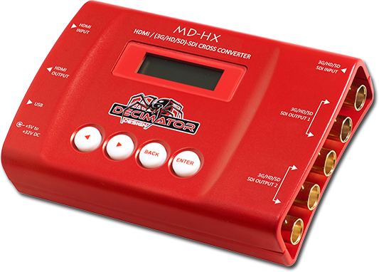

何から何へ？
入力側と出力側の端子・映像形式を整理。
映像をつなぐ・整える ↗EQUIPMENT / 19
小型映像変換
HDMIとSDIをつなぎ、映像形式をそろえる。
KEY SPECIFICATIONS

画像を大きく見る ＋01 / ROLE & FLOW
02 / BEFORE YOUR BRIEF
入力側と出力側の端子・映像形式を整理。
端子だけの変換か、解像度・fpsの調整も必要かを決める。
製造番号の先頭を確認し、必要な機能との適合を合わせる。
03 / CHOOSING THE RIGHT TOOL
小型機器でHDMIとSDIの接続をつなぎ、HD映像の形式を合わせたいときに。
製造番号の世代で機能・付属品が変わるため、手配する個体の世代に合わせて構成します。
メーカーはCLD・CLE・CLFで始まる製造番号と、旧CLA・CLB・CLCを分けて案内しています。SDI出力は2口ずつの組で、組ごとに出す信号を選びます。付属品は、世代ごとに明細でお伝えします。
入力と出力の映像形式、端子、製造番号の世代、変換目的、電源・ケーブルをお聞かせください。本体・周辺機材・搬入出・設営・本番操作・撤去を分けて、必要な範囲を整理します。
04 / RELATED EQUIPMENT